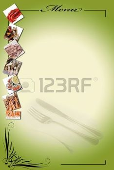

Esseyez nos porte-menu !
Sélectionnez les options qui vous conviennent et tournez les pages.
Réglages :
Choix du modèle
MenuBook
MenuSerigrafik
MenuPlastik
MenuBasik
MenuClassik
Format du menu
A4
A5
A6
Cocktail
MiniCocktail
Carré
Grand
Couleur de fond
Blanc
Marron
Noir
Gris
Couleur des bordures
Vert foncé
Vert anis
Bleu gris
Bleu foncé
Bleu clair
Jaune
Orange
Rouge
Bordeaux
Violet
Crème
Marron
Noir
Gris
Rose
Blanc
+
-
Page 1
Page 2
Page 3
Page 4
Exemple de menu :
